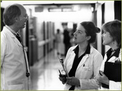
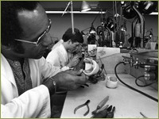

The Formation of the Graduate Division
In 1961, the Regents of the University decentralized graduate education and San Francisco, which had previously been under the jurisdiction of Berkeley’s administration, was organized as an independent Graduate Division with its own dean and graduate council. The Division was formed to provide leadership for graduate education and to serve as an administrative home for student admissions, degree progression, the appointment and advancement of postdoctoral scholars, and the development of campus policies affecting both students and postdoctoral scholars (post-docs). These responsibilities soon grew to include student recruitment, the acquisition and management of fellowship awards, review of graduate academic programs, development of new academic degree programs, and the provision of student and post-doc services to enhance campus life. The dean of the Graduate Division shared overall responsibility for graduate academic matters and postdoctoral scholar appointments with the Graduate Council, a standing committee of the San Francisco Division of the Academic Senate.

Harold Harper, first Dean of the Graduate Division

Throughout the 1970s and 1980s the list of graduate programs that were approved continued to grow, including PhD programs in medical anthropology (approved in 1973), human development (1975), neuroscience (1976), Doctor of Mental Health Degree (DMH) (1976), genetics (1977), immunology (1979), and nursing (1983). Additionally, a unique organizational structure was formed between UCSF and other UC campuses through the offering of joint Ph.D. degree programs: Speech and Hearing Sciences (UCSF and UC Santa Barbara 1972); Medical Anthropology (UCSF and UC Berkeley 1975); and, Bioengineering (UCSF and UC Berkeley 1983). A partnership was also formed between UCSF and the California State University system through the development of the joint M.S. degree in Physical Therapy with San Francisco State University in 1989. The growth of graduate education has substantially shaped the prominence of innovative research at UCSF.
Dr. Barbara Koenig and Dr. Jessica Muller conducting research as part of a Medical Anthropology participant observation study, "On the Boundary of Life and Death: Care of the Dying by Medical Residents."
A new area of recruitment that involved both the School of Dentistry and the Graduate Division was generated by a grant from the National Institute of Dental Research to support graduate training in the basic sciences called the Research Teacher Training Grant, supporting eleven students a year for work leading to the PhD. This program, which was initiated in 1958, was directed by Dr. Howard Meyers, graduate advisor for the School of Dentistry.
Along similar lines, the School of Medicine and the Graduate Division sponsored the creation of the Medical Scientist Training Program (MSTP) in 1969. Funded by the US Public Health Service, the program offered a special stipend to students to pursue graduate work along with a medical degree in order to correct for the “lack of academic programs designed specifically to prepare physicians for faculty careers.” The MSTP curriculum originally consisted of three years of medical school plus three years of formal graduate study, leading to the MD degree and either an MS or PhD degree depending on which requirements were satisfied. Originally, funding covered the costs for six students, which was expanded to twelve students in 1972, the same number of students who are admitted on this program in 2008. Applicants to this program are admitted separately to the medical school and to the graduate program.

Intensive recruitment programs designed to increase the participation of underrepresented students in graduate programs began in the early 1980s with the advent of the NIMH-funded Undergraduate Summer Research Training Program. This program, which prepares undergraduates for careers in biomedical and social science research, continues today as a national model. The Graduate Division also led and funded numerous campus efforts to increase diversity in graduate education, both at UCSF and at other UC campuses.
School of Dentistry Prosthetics Lab
Beginning with fewer than 300 students in 1961, the Division grew to 894 registered students in 1985: 361 PhD candidates, 443 master’s students and 90 postgraduate professional doctoral students. The Graduate Division also oversaw the administration of some 700 postdoctoral scholars in 36 departments or Organized Research Units (ORUs). Also by 1985 the remarkable advances in graduate education on campus generated enough demand for the creation of a separate graduation ceremony. The first Graduate Division commencement was held on June 7, 1985 in Cole Hall on Parnassus Campus.
In 2008 the Graduate Division oversees approximately 1,500 students in twenty graduate programs and five graduate certificate programs, as well as 1,100 postdoctoral scholars.
>> Innovations in Professional Education
{% include footer.html %}